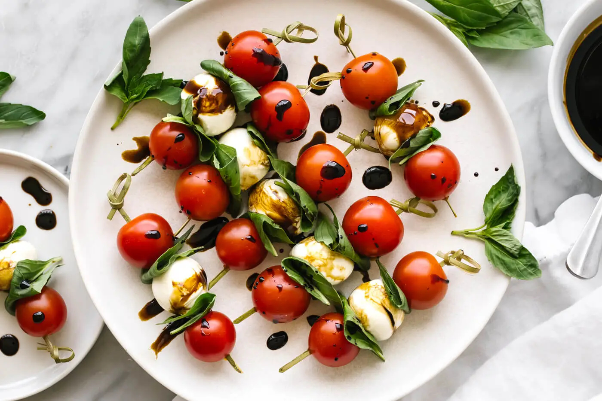

Caprese Skewers Recipe

Description
These colorful caprese skewers with bite-sized portions of mozzarella, tomato, and basil make the perfect appetizer for holiday parties.
Ingredients
- 20 grape tomatoes
- 10 ounces mozzarella, cubed
- 2 tablespoons extra virgin olive oil
- 2 tablespoons extra virgin olive oil
- 1 pinch salt
- 1 pinch ground black pepper
- 20 toothpicks
Steps
- Gather all ingredients.
- Toss tomatoes, mozzarella cheese, olive oil, basil, salt, and pepper together in a bowl until well coated.
- Skewer one tomato and one piece of mozzarella cheese on each toothpick.